Webmaster
radiohotline[at]disroot[dot]org - PGP key
The more I try to outline who I am, the more I lose grasp.1
I'm an artist, musician, and programmer (I mainly use C), with a strong passion for music, computers (both CS and CE), experimental art, DIY, and other things.
I am a linguistics student and computer engineering dropout.
I love learning about everything. More persistent interests include: philosophy, music theory, literature, linguistics
(and anthropology, even though I despise mankind and what it made), cryptanalysis, video games and game development, animation, filmmaking (especially directing),
electronics, ham radio, dinosaurs, birdwatching, FOSS, and, of course, computers.
I'm also fascinated by categorization, data archives and collections of basically anything, tools, trinkets, mechanisms, and musical instruments.
A lot of my interests are off-shoots or combinations of each other, and my aspirations lay everywhere since my dream is to combine the things that
I enjoy doing into a valuable creation.
1
Fruit bled in the palm
Streaking life across my skin
I am real again
2

Soft Machine2 started in 2021 under the name "Randal", and was only populated in 2022 (where it became Teeth in Vitro) when it solely held the Nirvana page until the summer, when I decided to reserve it for my portfolio. I promised it things that I never did. It was relaunched in 2024 as a much more compact personal website with a modest beige version that you can find under /min and the less terminal-friendly version that you are browsing, which is based on the typography in House of Leaves. In late 2025, I began hosting the site off Neocities and the site adopted the name Soft Machine. You pass by people every day and they don't leave an impression on you, and neither will I, but maybe I will leave a mark on the world as someone who merely existed. Aim: Art and techy escapades, when I undertake the escapades. Essays may be shared if a topic lingers on my mind. Since 2025, the site began hosting my art.
 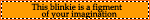
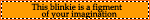
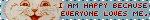 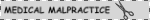 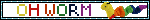
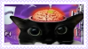 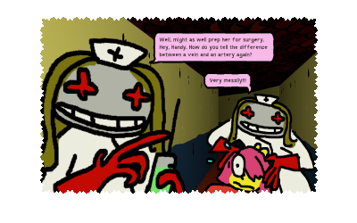 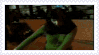
 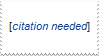
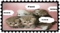
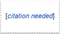
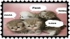
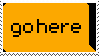 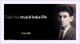
 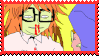
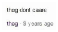
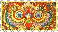
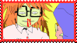
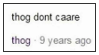
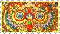